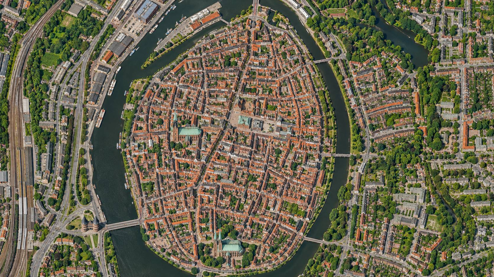

Lübeck
Altstadt · UNESCO 1987
17:00 · 午後
N ↑ · M 大地圖
時間
T
視角
V
地圖
M
奔跑
Shift
說明
H

M 或點一下關閉
Lübeck
漢薩同盟之后，特拉沃河環抱的磚造舊城。這是一個沒有時間限制的開放空間：走過霍爾斯滕門、鹽倉、聖母教堂和市政廳，街上有行人、單車和汽車，河上有船，城外草地的風車一直在轉。
W A S D／方向鍵
走路
Shift
奔跑（按住）
滑鼠拖曳／滾輪
轉動鏡頭／拉近拉遠
空白鍵
跳
左下搖桿
走路，推到底就是跑
畫面其他地方滑動
轉動鏡頭
T · V · M
切換時間 · 第一／第三人稱 · 大地圖
進入舊城
正在載入 Three.js…